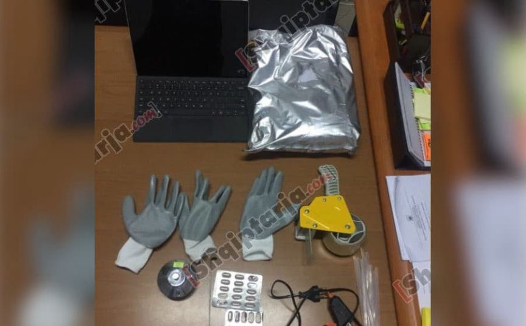
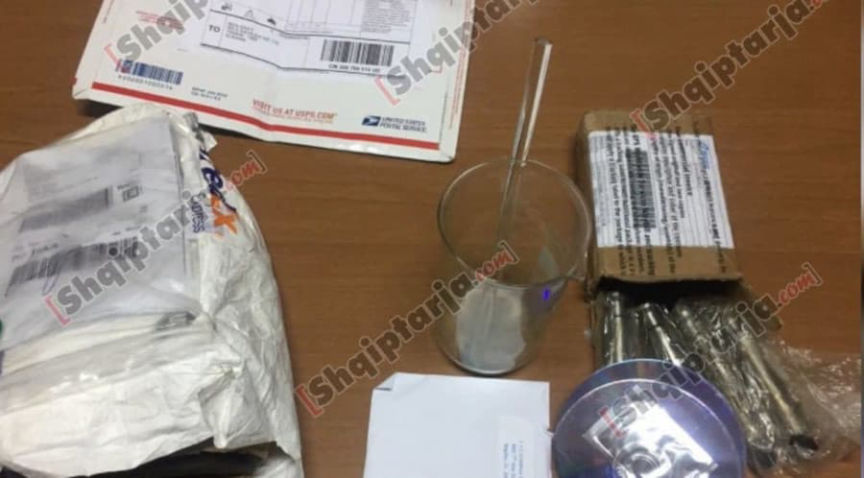
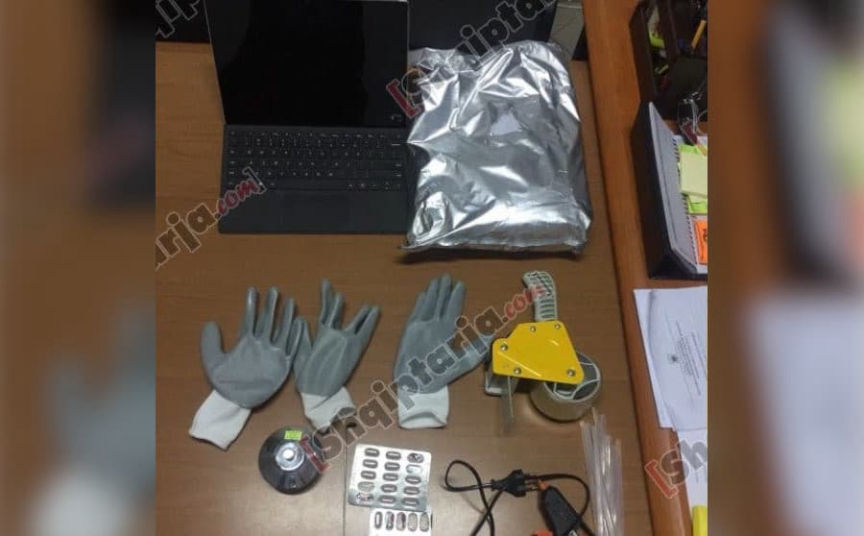
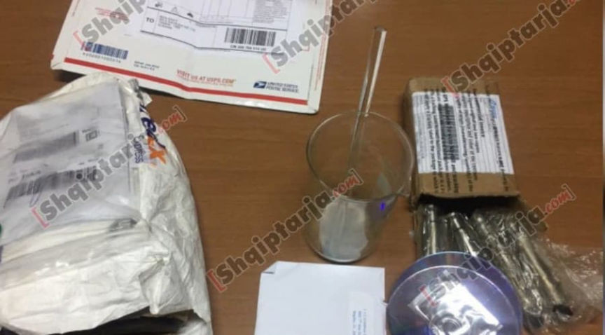

Two Sentenced for Selling Fake Oxy Pills on the Darkweb
Two drug dealers who sold counterfeit oxycodone pills on the darkweb were sentenced to prison in Connecticut.Summary
U.S. District Judge Stefan R. Underhill sentenced Arber Isaku, 32, and Vincent Decaro, 32, to 51 months of imprisonment and 48 months of imprisonment, respectively. Isaku previously pleaded guilty to one count of conspiracy to possess with intent to distribute, and to distribute fentanyl analogues. Decaro previously pleaded guilty to one count of possession with intent to distribute fentanyl analogues.
According to court documents, the defendants imported fentanyl and fentanyl analogs from suppliers in China. After receiving the fentanyl, the duo would create counterfeit oxycodone pills with a pill press at Decaro’s residence in Stamford, Connecticut. A third conspirator, David Reichard, lived at Decaro’s residence and assisted Decaro and Isaku in packaging and mailing counterfeit oxycodone pills. Reichard has pleaded guilty to his role in the conspiracy but has not yet been sentenced.
The defendants sold the fake pills through vendor accounts on darkweb markets, including the account “Eastcoastcartelkings” on Hansa Market.
The Case First Arrest
Police first arrested Decaro and Isaku on June 17, 2017, in Las Vegas, Nevada. Isaku had 30mg oxycodone pills in his possession at the time of his arrest. The pills tested positive for fentanyl.Second Arrest
On August 23, 2017, police conducted a controlled delivery of a package addressed to Isaku that contained more than 160 grams of fentanyl. After Isaku took possession of the package, police officers arrested him and lawfully searched his home in Stamford, Connecticut. During the search, officers recovered nearly 200 blue 30mg “oxycodone” pills. Isaku admitted that he received packages of controlled substances for another individual but would explicitly identify anyone.
Pill Presses
A search of a laptop seized during a search of Isaku’s house resulted in the discovery of two PGP keys named are named “ecckhansa” and “ECCKings.” Investigators also found an order form for two TDP-5 pill presses from a company called LFA Machines in Texas. On the order form, the intended use is listed as “Starting a supplement company.” The order form is accompanied by a copy of Isaku’s Connecticut driver’s license and is signed and dated June 7, 2017.Coinbase
On July 19, 2017, law enforcement agents shut down Hansa Market after using the market as a honeypot for several weeks. During the investigation into Hansa, police seized the market’s servers, allowing investigators to access everything they could decrypt. According to the criminal complaint, police found a vendor on the marketplace who used one of the PGP keys on Isaku’s laptop. The vendor, “eastcoastcartelkings,” registered a Hansa account on July 6, 2017. Investigators learned that the vendor had paid their vendor bond with an address associated with Coinbase. The vendor’s refund address was also associated with a Coinbase wallet.
Records from Coinbase identified Isaku as the owner of the account in question. The account had several wallets, including one with the address <code>12hsYQJ6QKw1U66pS65GsqVzmsikdtKa3m</code> - the same wallet address used as the refund wallet for the “eastcoastcartelkings” Hansa account. Additionally, Coinbase records showed a transfer of .05079822 Bitcoins to <code>12Bogh3xUUCQ6TMKQvNKsNGnE4pEX38hgG</code> - the Bitcoin wallet address used for the “eastcoastcartelkings” Hansa vendor bond.
Authorities released Isaku after the August 2017 arrest. After his arrest, he traveled to Albania with Decaro.Stamford Search
On April 3, 2018, police executed a search warrant at Decaro’s residence in Stamford. During the search, police found:
a large number of pills that contained a total of 330 grams of fentanyl and acetyl fentanyl; approximately 40 grams of powdered fentanyl analogues; one kilogram of alprazolam powder; three pill presses; instructions on how to prepare carfentanil; a Hazmat suit; a gas mask; and a large number of U.S. Postal mail envelopes. One of the USPS envelopes came from “a known dark web fentanyl vendor in Ft. Meyer, Florida.” Two of the pill presses matched the pill presses ordered by Isaku. Police also arrested Reichard at Decaro’s house.Albania
On September 21, 2018, Albanian State Police arrested Isaku and Decaro as they attempted to cross the border into Kosovo. When questioned by Albanian authorities, Isaku admitted that the United States government wanted him.

Police tracked the taxi that had transported Decaro and Isaku out of the city of Tirana toward the Kosovo border and subsequently found an apartment where both defendants had been living. During a search of their apartment in Tirana, police found evidence indicating the duo had either begun or were about to start synthesizing fentanyl, alprazolam powder, fentanyl powder, unidentified controlled substances, and instructions for synthesizing fentanyl.

Drug Enforcement Administration Special Agent Ryan Mensing included a paragraph about Decaro’s dog in the criminal complaint:
“I was present for the search, and I noticed a German shepherd at the apartment. The dog seemed to be the same dog I had encountered at Vincent Decaro’s residence in Stamford, Connecticut, in April of 2018 during the execution of a search warrant at that location. Arber Isaku advised that this dog’s name was ‘Hunter’ and that this was Vincent Decaro’s dog had been living in Stamford, Connecticut, previously. In fact, Decaro advised the Albanian State Police that he was living in the apartment in Tirana, Albania with Arber Isaku and his Decaro’s dog named ‘Hunter.’”
Conclusion Indictment [
A grand jury returned an indictment that charged Isaku, Decaro, and Reichard with:
conspiracy to Distribute and to Possess with Intent to Distribute Fentanyl Analogue; Possession with Intent to Distribute Fentanyl Analogue; and Possession with Intent to Distribute Fentanyl Analogue. Convictions
In May 2019, Reichard pleaded guilty to one count of conspiracy to distribute, and to possess with intent to distribute, fentanyl analogue. On June 15, 2021, Decaro pleaded guilty to one count of possession with intent to distribute fentanyl analogues. On August 6, 2021, Isaku pleaded guilty to one count of conspiracy to possess with intent to distribute, and to distribute, fentanyl analogues.Sentencing
U.S. District Judge Stefan R. Underhill sentenced Isaku to 51 months in prison and Decaro to 48 months in prison. Isaku, who is out on bond, must report to prison on September 21, 2022. Decaro, who is also out on bond, must report to prison on November 2, 2022. Reichard is still awaiting sentencing.
Stamford Men Sentenced for Trafficking Counterfeit Oxycodone Pills Containing Fentanyl | , archive.is, archive.org
Indictment, complaint
U.S. District Judge Stefan R. Underhill sentenced Arber Isaku, 32, and Vincent Decaro, 32, to 51 months of imprisonment and 48 months of imprisonment, respectively. Isaku previously pleaded guilty to one count of conspiracy to possess with intent to distribute, and to distribute fentanyl analogues. Decaro previously pleaded guilty to one count of possession with intent to distribute fentanyl analogues.
Vincent Decaro in a mugshot.
According to court documents, the defendants imported fentanyl and fentanyl analogs from suppliers in China. After receiving the fentanyl, the duo would create counterfeit oxycodone pills with a pill press at Decaro’s residence in Stamford, Connecticut. A third conspirator, David Reichard, lived at Decaro’s residence and assisted Decaro and Isaku in packaging and mailing counterfeit oxycodone pills. Reichard has pleaded guilty to his role in the conspiracy but has not yet been sentenced.
The defendants sold the fake pills through vendor accounts on darkweb markets, including the account “Eastcoastcartelkings” on Hansa Market.
The Case First Arrest
Police first arrested Decaro and Isaku on June 17, 2017, in Las Vegas, Nevada. Isaku had 30mg oxycodone pills in his possession at the time of his arrest. The pills tested positive for fentanyl.Second Arrest
On August 23, 2017, police conducted a controlled delivery of a package addressed to Isaku that contained more than 160 grams of fentanyl. After Isaku took possession of the package, police officers arrested him and lawfully searched his home in Stamford, Connecticut. During the search, officers recovered nearly 200 blue 30mg “oxycodone” pills. Isaku admitted that he received packages of controlled substances for another individual but would explicitly identify anyone.
Arber Isaku in a Flickr photo | Arber Isaku
Pill Presses
A search of a laptop seized during a search of Isaku’s house resulted in the discovery of two PGP keys named are named “ecckhansa” and “ECCKings.” Investigators also found an order form for two TDP-5 pill presses from a company called LFA Machines in Texas. On the order form, the intended use is listed as “Starting a supplement company.” The order form is accompanied by a copy of Isaku’s Connecticut driver’s license and is signed and dated June 7, 2017.Coinbase
On July 19, 2017, law enforcement agents shut down Hansa Market after using the market as a honeypot for several weeks. During the investigation into Hansa, police seized the market’s servers, allowing investigators to access everything they could decrypt. According to the criminal complaint, police found a vendor on the marketplace who used one of the PGP keys on Isaku’s laptop. The vendor, “eastcoastcartelkings,” registered a Hansa account on July 6, 2017. Investigators learned that the vendor had paid their vendor bond with an address associated with Coinbase. The vendor’s refund address was also associated with a Coinbase wallet.
Records from Coinbase identified Isaku as the owner of the account in question. The account had several wallets, including one with the address <code>12hsYQJ6QKw1U66pS65GsqVzmsikdtKa3m</code> - the same wallet address used as the refund wallet for the “eastcoastcartelkings” Hansa account. Additionally, Coinbase records showed a transfer of .05079822 Bitcoins to <code>12Bogh3xUUCQ6TMKQvNKsNGnE4pEX38hgG</code> - the Bitcoin wallet address used for the “eastcoastcartelkings” Hansa vendor bond.
Authorities released Isaku after the August 2017 arrest. After his arrest, he traveled to Albania with Decaro.Stamford Search
On April 3, 2018, police executed a search warrant at Decaro’s residence in Stamford. During the search, police found:
On September 21, 2018, Albanian State Police arrested Isaku and Decaro as they attempted to cross the border into Kosovo. When questioned by Albanian authorities, Isaku admitted that the United States government wanted him.

Items sezied during a search of Decaro's apartment in Albania
Police tracked the taxi that had transported Decaro and Isaku out of the city of Tirana toward the Kosovo border and subsequently found an apartment where both defendants had been living. During a search of their apartment in Tirana, police found evidence indicating the duo had either begun or were about to start synthesizing fentanyl, alprazolam powder, fentanyl powder, unidentified controlled substances, and instructions for synthesizing fentanyl.

More items sezied during the search of Decaro's apartment in Albania, including USPS and FedEx packages.
Drug Enforcement Administration Special Agent Ryan Mensing included a paragraph about Decaro’s dog in the criminal complaint:
“I was present for the search, and I noticed a German shepherd at the apartment. The dog seemed to be the same dog I had encountered at Vincent Decaro’s residence in Stamford, Connecticut, in April of 2018 during the execution of a search warrant at that location. Arber Isaku advised that this dog’s name was ‘Hunter’ and that this was Vincent Decaro’s dog had been living in Stamford, Connecticut, previously. In fact, Decaro advised the Albanian State Police that he was living in the apartment in Tirana, Albania with Arber Isaku and his Decaro’s dog named ‘Hunter.’”
Conclusion Indictment [
A grand jury returned an indictment that charged Isaku, Decaro, and Reichard with:
In May 2019, Reichard pleaded guilty to one count of conspiracy to distribute, and to possess with intent to distribute, fentanyl analogue. On June 15, 2021, Decaro pleaded guilty to one count of possession with intent to distribute fentanyl analogues. On August 6, 2021, Isaku pleaded guilty to one count of conspiracy to possess with intent to distribute, and to distribute, fentanyl analogues.Sentencing
U.S. District Judge Stefan R. Underhill sentenced Isaku to 51 months in prison and Decaro to 48 months in prison. Isaku, who is out on bond, must report to prison on September 21, 2022. Decaro, who is also out on bond, must report to prison on November 2, 2022. Reichard is still awaiting sentencing.
Stamford Men Sentenced for Trafficking Counterfeit Oxycodone Pills Containing Fentanyl | , archive.is, archive.org
Indictment, complaint